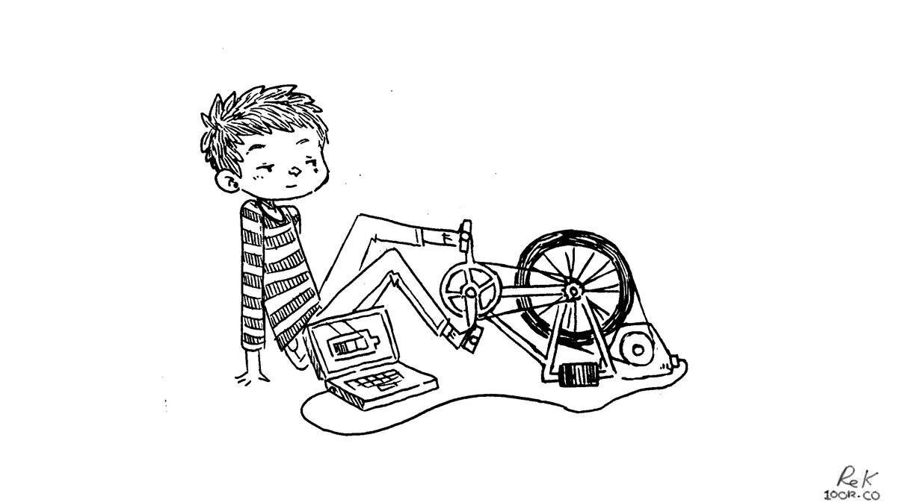

cost of simplicity
We like to simplify many of the systems onboard so we can maintain them ourselves, but simplicity often comes at the cost of space. For instance, we installed a woodstove for heating. It’s a great system with few moving parts, and with no electronics that can fail, but we have to carry wood to fuel it, and the amount we can store isn’t enough to carry us through winter. Our firebox can only accommodate pieces that are 9 inches long, we have to stoke our fire often but it could never last the night. In the morning neither of us want to brave the cold to light it, but whoever has to pee first is obligated to do the deed.
A dry toilet is as simple as it gets, with no hoses, thru-hulls or a holding tank, but the toilet itself occupies more space and we must carry medium to keep the solids covered. Boaters typically make use of shore facilities to pump out the sewage in their tanks, but with a dry toilet the task of emptying the bin becomes ours.